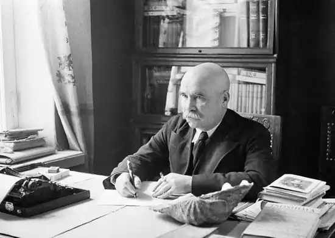
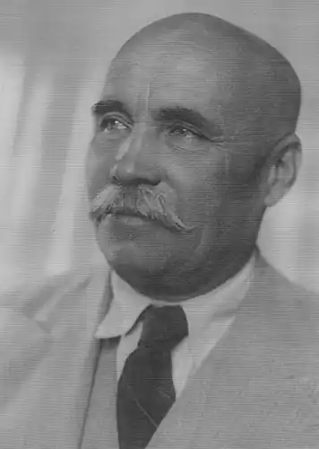
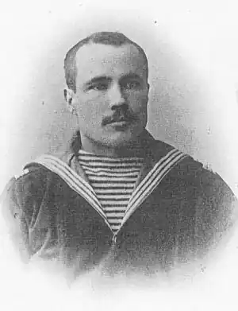
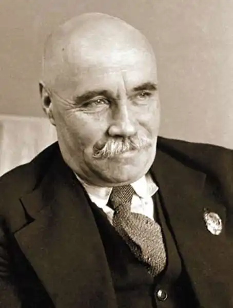

Новиков-Прибой (справжнє прізвище — Новиков) Олексій Силич (1877 — 1944), прозаїк.
Народився 12 березня (24 н.с.) в селі Матвіївській Тамбовської губернії в —крестьянской сім'ї. Батько був з миколаївських солдатів, що пробули на військовій службі 25 років. Навчався в церковно-приходської
школі, з закінченням якої в одинадцять років закінчилося його освіту, так як на його продовження не було коштів. У 22 роки був покликаний в армію, служив на Балтійському флоті матросом (1899 — 1906), полюбив море. Почав займатися самоосвітою. Протягом двох років відвідував Кронштадтську школу, познайомився з "крамольною" літературою, за що потрапив до в'язниці. Після звільнення був відправлений на війну з Японією, брав участь в Цусімському битві. Потрапив в полон і протягом восьми місяців мав можливість читати книги, про які раніше тільки чув. У 1906 повернувся в рідне село, написав брошури про Цусімському бою ( "За чужі гріхи", "Божевільні і безплідні жертви", під псевдонімом А.Затертий — колишній матрос). Ці брошури були заборонені урядом. Побоюючись переслідувань, біг до Англії. В 1907 — 13 поневірявся за кордоном як політичний емігрант: жив у Франції, Іспанії, Італії та в Північній Африці. Плавав матросом торгового флоту. У 1912 — 13 жив у Горького на Капрі (раніше послав Горькому кілька своїх оповідань, які той схвалив). Пізніше Новіков скаже: "Горький поставив мене на ноги. Після навчання у нього я твердо і самостійно увійшов в літературу". Перша збірка оповідань Новикова-Прибоя "Морські розповіді" в 1914 був вилучений в наборі; вийшов тільки після революції. Після революції твори письменника регулярно з'являлися у пресі: повісті "Море кличе (1919)," Підводники "(1923)," Єралашний рейс "(1925)," Жінка в море "(1926) та ін. Найзначніше твір Новикова-Прибоя — історична епопея "Цусіма" (1932 — 35). Протягом років Великої Вітчизняної війни виступав зі статтями та нарисами про моряків, працював над великим романом "Капітан 1-го рангу" (не був закінчений). А.Новиков-Прибой помер у Москві 29 квітня 1944.